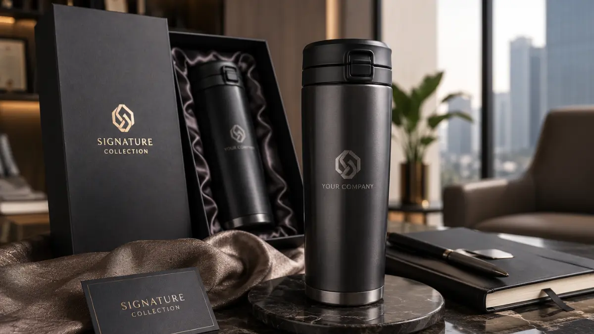

Signature Collection Souvenir Kantor Eksklusif dengan Sentuhan Premium untuk Branding Perusahaan
 Mega Anggun (ega)
31 Juli 2026
5 Menit Baca
Mega Anggun (ega)
31 Juli 2026
5 Menit Baca

Signature Collection souvenir kantor eksklusif adalah lini produk pilihan dengan material premium, teknik personalisasi presisi tinggi, dan kemasan eksklusif yang dirancang khusus untuk memperkuat identitas brand perusahaan pada momen-momen penting. Koleksi ini menonjolkan detail finishing yang tidak ditemukan pada souvenir standar.
Signature Collection souvenir kantor eksklusif menonjolkan detail finishing yang tidak ditemukan pada souvenir standar. Personalisasi logo menggunakan teknik presisi seperti laser engraving dan UV printing. Kemasan eksklusif menjadi bagian tak terpisahkan dari pengalaman penerima souvenir. Cocok digunakan untuk klien VIP, jajaran direksi, atau mitra bisnis strategis. Pemesanan signature collection umumnya memerlukan waktu konsultasi desain lebih awal.
Apa yang Membedakan Signature Collection dari Koleksi Souvenir Reguler?
Signature Collection dibedakan oleh kombinasi material premium, presisi teknik personalisasi, dan kemasan presentasi yang secara khusus dirancang untuk menonjolkan kesan eksklusif dibandingkan lini souvenir reguler.
Pada koleksi reguler, fokus produksi umumnya diarahkan pada efisiensi biaya dan kecepatan produksi dalam jumlah besar. Sebaliknya, Signature Collection menempatkan detail sebagai prioritas utama. Setiap item dalam koleksi ini telah menjalani proses pemilihan material yang lebih ketat, seperti penggunaan stainless steel yang dilapisi tahan gores atau kulit sintetis dengan tekstur premium yang mirip dengan kulit asli.

Proses finishing juga menerima perhatian lebih, termasuk detail jahitan pada produk berbahan kain atau kulit, serta kehalusan permukaan pada produk logam. Aspek lain yang membedakan adalah pendekatan desain yang lebih personal. Signature Collection sering kali melibatkan proses konsultasi desain antara tim kreatif penyedia souvenir dengan pihak perusahaan, guna memastikan elemen visual brand tersampaikan secara akurat pada setiap detail produk.
Produk Apa Saja yang Biasanya Masuk dalam Signature Collection?
Produk yang umum masuk dalam Signature Collection meliputi tumbler premium dengan finishing matte atau glossy, agenda kulit sintetis dengan emboss logo, card holder logam, dan set alat tulis eksekutif.
Tumbler premium menjadi salah satu produk andalan dalam koleksi ini karena fungsinya yang harian dan daya tahan yang lama, sehingga eksposur logo perusahaan berlangsung dalam jangka waktu panjang. Tumbler dengan finishing matte atau glossy memberikan kesan modern dan profesional.
Agenda kulit sintetis dengan teknik emboss logo turut menjadi pilihan populer, khususnya untuk souvenir yang diperuntukkan bagi jajaran manajemen atau mitra bisnis formal. Agenda ini biasanya memiliki detail jahitan rapi dan kertas berkualitas premium.
Card holder logam dengan finishing matte juga sering dipilih sebagai pelengkap set souvenir karena ukurannya yang ringkas namun tetap memberikan kesan premium. Card holder ini dapat berfungsi sebagai tempat kartu nama atau kartu identitas.
Selain produk-produk tersebut, beberapa perusahaan turut menambahkan aksesori pendukung seperti notes kecil bersampul kulit sintetis atau pouch multifungsi sebagai pelengkap set signature untuk memperkaya pengalaman unboxing penerima souvenir.
Bagaimana Signature Collection Memperkuat Branding Perusahaan?
Signature Collection memperkuat branding perusahaan melalui konsistensi visual identitas brand pada setiap detail produk, mulai dari warna, tipografi logo, hingga kualitas kemasan yang diterima langsung oleh klien maupun karyawan.
Konsistensi ini penting karena setiap titik sentuh dengan brand turut membentuk persepsi keseluruhan terhadap kredibilitas perusahaan. Produk dari Signature Collection yang memiliki kualitas produksi tinggi secara umum menciptakan kesan bahwa perusahaan memperhatikan detail dalam segala aspek operasionalnya, termasuk pada hal yang tampak kecil seperti pemilihan souvenir.
Kesan ini dapat berdampak positif terhadap hubungan bisnis jangka panjang, khususnya saat souvenir diberikan kepada mitra strategis atau calon klien pada tahap negosiasi awal. Berdasarkan pengamatan umum di sektor corporate gifting, penggunaan merchandise dengan kualitas premium pada momen presentasi bisnis formal cenderung lebih diingat oleh penerima dibandingkan merchandise standar yang mudah ditemukan di pasaran. Hal ini menjadikan Signature Collection sebagai pilihan strategis bagi perusahaan yang ingin memaksimalkan dampak branding dari setiap souvenir yang dibagikan.
Bagaimana Proses Personalisasi pada Signature Collection Dilakukan?
Proses personalisasi pada Signature Collection umumnya dilakukan melalui tahapan konsultasi desain, pembuatan mock-up, hingga produksi menggunakan teknik seperti laser engraving, UV printing, atau emboss sesuai jenis material produk.
Tahap 1: Konsultasi Desain
Tahap konsultasi desain menjadi langkah awal yang penting, di mana tim kreatif akan mendiskusikan elemen visual brand yang ingin ditonjolkan, termasuk pemilihan warna, posisi logo, serta gaya tipografi yang sesuai dengan panduan brand perusahaan.
Tahap 2: Pembuatan Mock-up
Setelah konsep desain disepakati, tahap berikutnya adalah pembuatan mock-up atau contoh produk untuk memastikan hasil akhir sesuai dengan ekspektasi sebelum memasuki tahap produksi massal.
Tahap 3: Produksi dengan Teknik Presisi
Pada tahap produksi, teknik personalisasi disesuaikan dengan jenis material. Produk berbahan logam seperti tumbler dan card holder umumnya menggunakan teknik laser engraving atau UV printing agar hasil logo lebih tahan lama. Sementara produk berbahan kulit sintetis seperti agenda lebih sering menggunakan teknik emboss atau debossing untuk menghasilkan tekstur logo yang timbul secara halus pada permukaan produk.
Butuh Signature Collection Souvenir Eksklusif?
Konsultasikan kebutuhan Signature Collection souvenir eksklusif Anda dengan tim kami untuk mendapatkan rekomendasi produk dan teknik personalisasi terbaik.
Konsultasi SekarangKesimpulan
Signature Collection souvenir kantor eksklusif menjadi pilihan tepat bagi perusahaan yang ingin menghadirkan kesan premium melalui setiap detail produk yang dibagikan kepada klien maupun karyawan. Kombinasi material berkualitas, teknik personalisasi presisi, dan proses konsultasi desain yang matang menjadikan koleksi ini unggul dibandingkan souvenir reguler. Bagi perusahaan yang membutuhkan paket lebih lengkap, dapat mempertimbangkan opsi bundling souvenir kantor eksklusif, atau menyesuaikan pilihan produk untuk kebutuhan meeting dan gathering perusahaan.
FAQ Seputar Signature Collection Souvenir Kantor